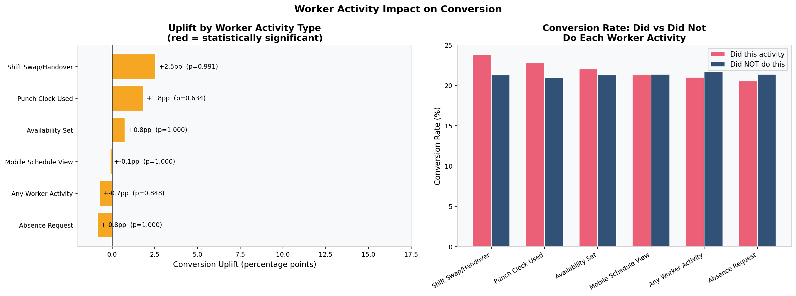
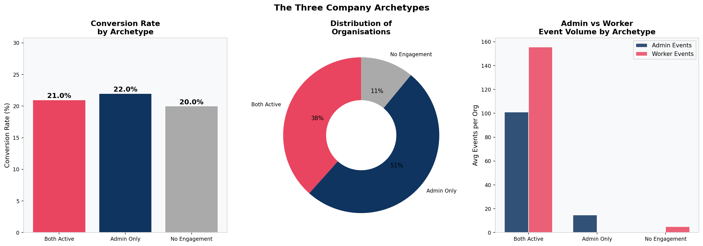
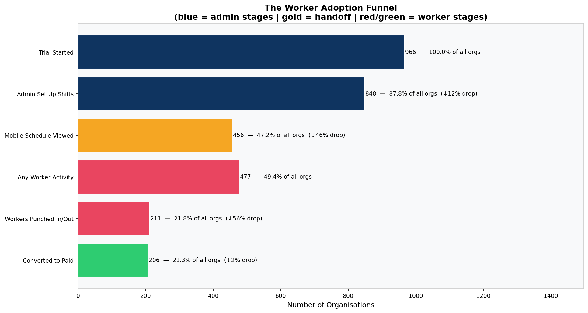
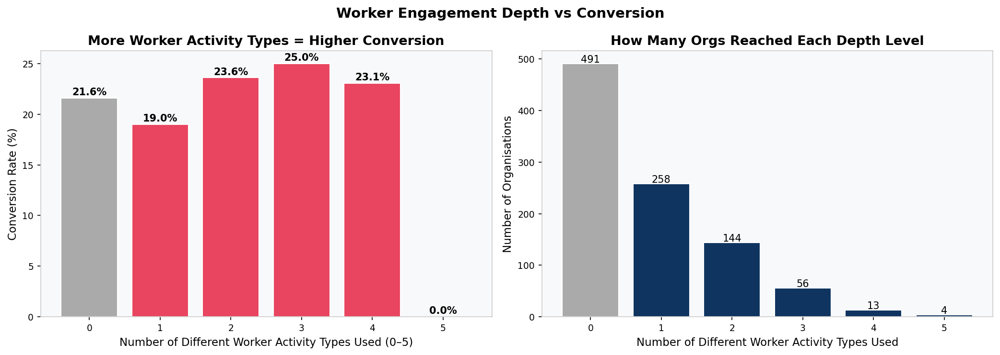
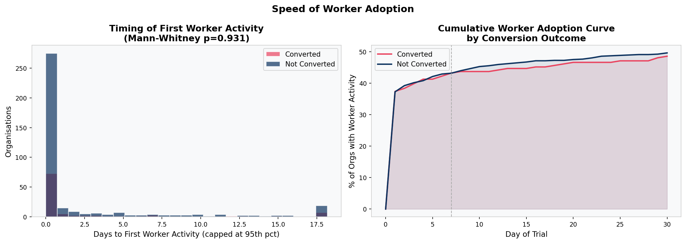
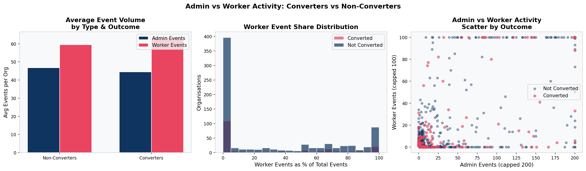
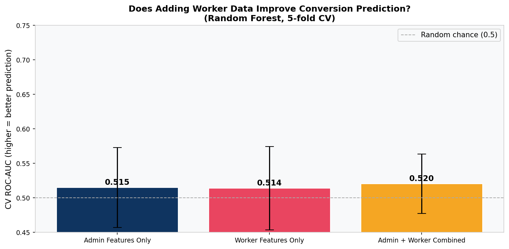
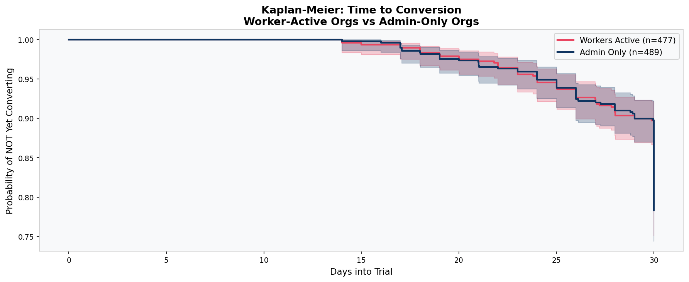
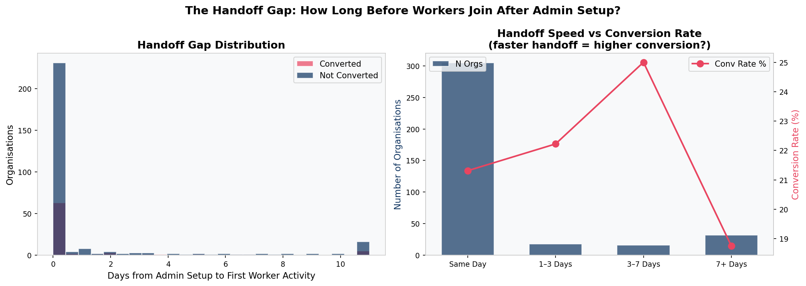

Project Overview
A B2B SaaS company offering workforce scheduling software had a 21.3% trial-to-paid conversion rate across a 30-day free trial window. On the surface this sits within the typical opt-in B2B benchmark range of 15 to 25%. But beneath that number, 760 out of 966 trialling organisations were walking away without paying, and nobody could explain why.
The raw data existed: 102,895 product events across 966 organisations, covering 28 distinct activity types from creating shifts to punching in and out. This project analyses that data in full, applying funnel analysis, statistical hypothesis testing, survival analysis, machine learning, and clustering to answer one question: what does a company do during its trial that predicts whether it will pay?
Central finding: Converters and non-converters are statistically indistinguishable in their product behaviour. Three separate machine learning models scored an AUC of approximately 0.48, below random chance. The conversion decision is being made outside the product entirely — in pricing conversations, sales touchpoints, and budget cycles that the event log cannot see.
The analysis also uncovered a structural product health problem: 51% of trialling organisations never got a single employee onto the platform after the admin set it up. The product was configured for a workforce that never arrived. This does not directly drive conversion, but it is a structural risk to post-conversion retention.
Full code, charts, SQL models, and README available on GitHub.
Python analysis · 12 charts · 4 SQL models · dbt-compatible architecture
The Business Problem
The product team had a standard product-led growth hypothesis: companies that engage more deeply with the product, use more features, stay active for more days, and get more employees onto the platform should be more likely to convert. This is the assumption that underlies most SaaS trial optimisation strategies.
The data held answers to questions the team could not answer from gut feel alone:
- Was the 21.3% conversion rate driven by identifiable behavioural signals, or was it essentially random from a product perspective?
- Did the two distinct user types in this product (admins and workers) show different conversion patterns?
- Was there a minimum engagement threshold that reliably predicted conversion?
- Did the timing of conversion (early vs late in the trial) reveal anything about what drove the decision?
- Could a machine learning model trained on product behaviour predict, at Day 3 or Day 7, which organisations would convert?
Answering these questions rigorously — and being honest when the answers are null — is the work this project sets out to do.
Data Overview and Cleaning
The dataset covered a 30-day free trial window for a B2B workforce scheduling SaaS platform. Each row represented one product event by one organisation.
| Field | Type | Description |
|---|---|---|
| organization_id | string | Unique identifier per trialling organisation |
| activity_name | string | Name of the product activity performed |
| timestamp | datetime | When the activity occurred |
| converted | boolean | Whether the organisation converted to paid |
| converted_at | datetime | Timestamp of conversion (null if not converted) |
| trial_start | datetime | When the trial started |
| trial_end | datetime | Trial expiry (trial_start + 30 days) |
Cleaning Steps
The raw dataset of 170,526 rows required significant cleaning before analysis. The following steps were applied and documented in the staging SQL model:
- Deduplication: Exact matching across all 7 columns removed 67,631 duplicate rows (40% of raw data), leaving 102,895 clean events.
- Datetime parsing: All datetime columns were parsed with
errors='coerce'so malformed values became null rather than causing failures downstream. - Null handling: The
converted_atfield is legitimately null for non-converting organisations and was treated as such, not as a data quality issue. - Window validation: Events were validated against the trial window. Zero events fell before
trial_startor aftertrial_end. - Clipping: Derived time fields (hours to first activity) were clipped at zero to prevent negative values from sub-second timestamp precision.
| Metric | Value |
|---|---|
| Raw rows | 170,526 |
| After deduplication | 102,895 |
| Duplicate rows removed | 67,631 (40%) |
| Unique organisations | 966 |
| Unique activity types | 28 |
| Overall conversion rate | 21.3% |
| Converted organisations | 206 |
| Non-converted | 760 |
Methodology
The analysis was structured in four progressive layers, each building on the last:
Data Cleaning and Feature Engineering
After cleaning (described above), each of the 966 organisations was characterised on an org-level feature matrix: total event count, admin event count, worker event count, unique activity types used, active days (admin-side and worker-side separately), and binary flags for six specific worker activities. A worker engagement depth score (0 to 5) was constructed by summing the binary worker activity flags.
Admin vs Worker Activity Segmentation
All 28 activity types were manually classified as either admin actions or worker actions based on product logic. Admin actions are configuration tasks (creating shifts, approving timesheets). Worker actions are operational daily tasks (clocking in, viewing the mobile schedule, setting availability). Each organisation was classified into one of three archetypes based on which sides of the product were used.
Statistical Hypothesis Testing
Mann-Whitney U tests compared all continuous engagement metrics between converters and non-converters (non-parametric, appropriate for right-skewed distributions). Chi-square tests assessed the relationship between each binary worker activity flag and conversion. Point-biserial correlations were calculated for all continuous-to-binary pairs.
Predictive Modelling and Survival Analysis
Three Random Forest models were trained and evaluated using 5-fold cross-validated ROC-AUC: admin features only, worker features only, and combined. Kaplan-Meier survival curves modelled time-to-conversion for worker-active versus admin-only organisations. K-Means clustering (k=4, elbow method) segmented organisations by behavioural profile.
The Admin vs Worker Framework
The most important analytical decision in this project was to separate admin and worker activity rather than treating all 102,895 events as equivalent. The rationale is grounded in how this product category actually works.
This is a workforce scheduling platform. It serves two fundamentally different users within the same account. Admins are managers who set up the schedule, create shifts, approve timesheets, and make the purchasing decision. Workers are the employees who view their schedule on mobile, clock in and out, set their availability, and request shift swaps. They do not make the purchasing decision, but they are the ones whose daily working lives depend on the product.
Only worker adoption creates genuine switching costs. If the admin is the only user, the product can be cancelled with a single decision. If workers are clocking in through it every day, cancellation means disrupting live operations for the entire workforce. That is a fundamentally different retention dynamic.
The hypothesis was wrong — but in a revealing way. Worker adoption proved not to predict trial conversion (p = 0.85, chi-square). But the framework is still correct. The implication has shifted from conversion to retention. Worker adoption is likely the key variable for predicting which paying customers stay versus which ones cancel. That question cannot be answered without post-conversion data, but the groundwork is laid here.
Key Findings
Eight findings emerged from the full analysis. The most important are summarised below:
Converters and Non-Converters Are Statistically Identical
Mann-Whitney U tests on total events, active days, unique activities, and time-to-first-activity all return non-significant p-values. The two groups are behaviourally indistinguishable.
Half of Trials Never Got a Worker onto the Platform
489 out of 966 organisations had the admin set up the product but no employee ever used it. Conversion rates for this group (21.7%) are virtually identical to those where workers did engage (21.0%).
Conversion Is a Deadline Decision
52% of all conversions happen in the final 9 days of the 30-day trial, with the largest single spike on Day 30 itself. This is deadline urgency, not a product value moment. Both converters and non-converters spike in activity in the final week.
The Handoff Failure Is the Biggest Funnel Drop
Of organisations that created at least one shift, 46% never opened the mobile schedule view. The admin built the schedule and nobody on the team ever opened it. This is the largest single friction point in the product.
Analysis Charts
All 12 charts below were generated programmatically from the Python analysis script. Each is embedded directly from the project's charts folder.











Statistical Modelling Results
Statistical tests and machine learning models were applied across all feature combinations. The results are consistent throughout:
Hypothesis Tests
| Metric | Test | p-value | Significant? |
|---|---|---|---|
| Total events | Mann-Whitney U | 0.851 | No |
| Active days | Mann-Whitney U | 0.820 | No |
| Unique activities | Mann-Whitney U | 0.650 | No |
| Time to first activity | Mann-Whitney U | 0.153 | No |
| Worker adoption (binary) | Chi-square | 0.850 | No |
Predictive Model Performance
| Model | Features | CV ROC-AUC |
|---|---|---|
| Random Forest | Admin features only | 0.515 |
| Random Forest | Worker features only | 0.514 |
| Random Forest | Admin + Worker combined | 0.520 |
Interpretation: The absence of a predictive signal is itself the signal. It points directly to a data gap — the variables that actually drive conversion (company size, acquisition channel, pricing, sales touchpoints) are not in the product event log. Collecting them is more valuable than further modelling of existing behavioural data.
SQL Data Models
The SQL layer translates the analytical findings into production-ready operational models designed to live in a data warehouse. The architecture follows dbt conventions with a staging layer feeding into three mart tables.
└── stg_trial_events (staging: deduplicated, validated, enriched)
├── mart_trial_goals (per-org goal completion tracking)
│ └── mart_trial_activation (activation status and tiers)
└── mart_worker_adoption (admin vs worker segmentation)
stg_trial_events
The single source of truth for cleaned event data. Separates data quality logic from analytical logic. Deduplicates, parses datetimes, removes out-of-window events, and adds trial_day_number, hours_since_trial_start, and days_to_conversion for use by all downstream models. Grain: one row per organisation per event, deduplicated.
mart_trial_goals
Tracks five data-driven trial goals per organisation. Goals were defined on product-value logic rather than statistical lift, since no individual behaviour achieved significance as a conversion predictor. Goal 1 (created a shift) captures the core admin action. Goal 2 (viewed mobile schedule) captures the handoff. Goal 3 (set availability) signals genuine workforce adoption. Goal 4 (active on 3+ days) captures sustained engagement. Goal 5 (used 3+ activity types) captures feature breadth. Grain: one row per organisation.
mart_trial_activation
Defines Trial Activation as completion of all five goals and assigns each organisation to an activation tier (Fully Activated, Partially Activated, Early Engagement, No Engagement). Built for direct CS and product team use without requiring analysts to re-run the analysis. Includes intervention flags: is_near_activated_not_converted, is_zero_engagement, and is_activated_churned. Grain: one row per organisation.
mart_worker_adoption
Operationalises the admin vs worker segmentation as a live operational metric. Classifies every event as admin-side or worker-side and produces the three-archetype classification. Includes flag_admin_only_not_converted (the primary target for the 48-hour onboarding nudge), flag_no_punchclock_not_converted, and flag_deep_worker_not_converted. Grain: one row per organisation.
Recommendations
Three recommendations emerged directly from the data, ranked by expected impact:
1. Capture the Missing Data (Priority: Immediate)
The current event log captures what users do inside the product. It captures nothing about why they decided to trial it, how large their company is, what price they were shown, or whether a salesperson spoke to them. These are almost certainly the variables that explain conversion.
- Add company size and industry to the signup flow
- Instrument UTM parameter capture at the signup URL to record acquisition source
- Integrate CRM data to log whether a sales or CS touchpoint occurred during the trial
- Record the pricing tier shown to each trialling organisation
2. Fix the Worker Onboarding Handoff (Priority: This Month)
51% of trialling organisations never got a worker onto the platform. When workers do join, they join within hours of admin setup. The problem is not slow adoption — it is that the connection is never made. This can be closed with a single automated email triggered when an admin creates shifts but no worker activity is recorded within 48 hours.
3. Deploy CS Outreach at Days 14 to 21 (Priority: This Quarter)
The survival analysis confirms conversion spikes sharply at trial expiry. The optimal intervention window is Days 14 to 21, before deadline urgency sets in. Flag all active trials at Day 14 that have not yet converted and prioritise the Partially Activated segment (3 to 4 goals complete).
Why this matters: None of these require a product rebuild. All three are executable within one quarter with existing infrastructure and zero additional headcount.
Tools and Technologies
This project was built entirely in Python with a dbt-compatible SQL layer, chosen for reproducibility and portability across data warehouse environments.